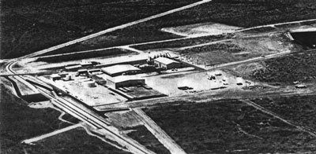
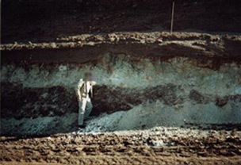
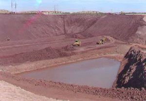
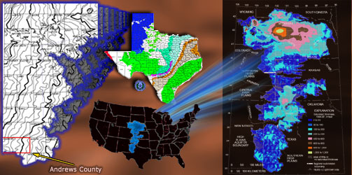
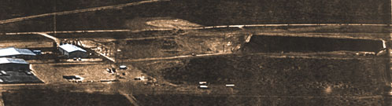
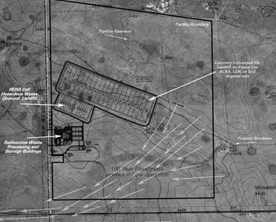
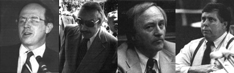
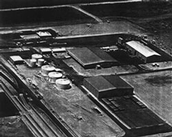
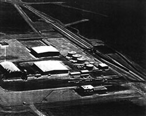

|  |
|  |  |
| Pictures taken during the digging of the hazardous waste pit. [left]: A visiting geologist shows us an aquifer feature called a sandtube, which is seen on the wall of the pit . [right]: It had rained the previous evening, and flooding was apparent at the bottom of the pit the next day . | |
|  The Ogallala, aka the High Plains aquifer, the largest aquifer in the United States. On the left, the portion in Texas including Andrews County; on the right, the size of the aquifer in the nation. |
Simmons and his money club: Bush, Perry, Dewherst, Hutchison, Gramm, Cornyn, Brown, and Craddick. |
Left to right: Harold Simmons, US Pres. George W. Bush, Sec. Int. Gayle Norton, and VP Dick Cheney. |
|  |
|  |
| 
WCS lobbyists Kent Hance, Chet Brooks, Billy Clayton, and Carl Parker |
|
"...She noticed Waste Control Specialists' presence after the facility opened in 1997 and new
faces starting showing up at school and the company logo began appearing on
softball and Little League uniforms. Then this year, the company gave her a $1,000 scholarship-
for which she never applied- to defray tuition at the University of North Texas, where
she plans in the fall to study marketing or public relations. Several
classmates received the same gift, she said.
"It was pretty cool that they picked me", working behind the counter at her job inside Ribbons and Bows, a gift shop on Andrews' central street. "I don't really know how [the site] affects us. But it doesn't affect my daily life." |
|  |  |